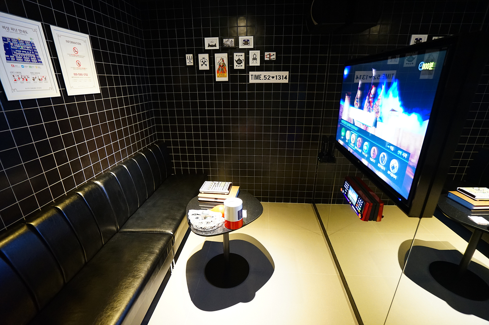

And what about Korean ballads? These are dramatic emotional songs which usually have a slower tempo and lyrics about love or romance. The reason this genre is so popular in Korea is because of the Norebang (Korean karaoke rooms).
Let's look at some classic ballad songs that are popular to sing at the norebang in Korea.